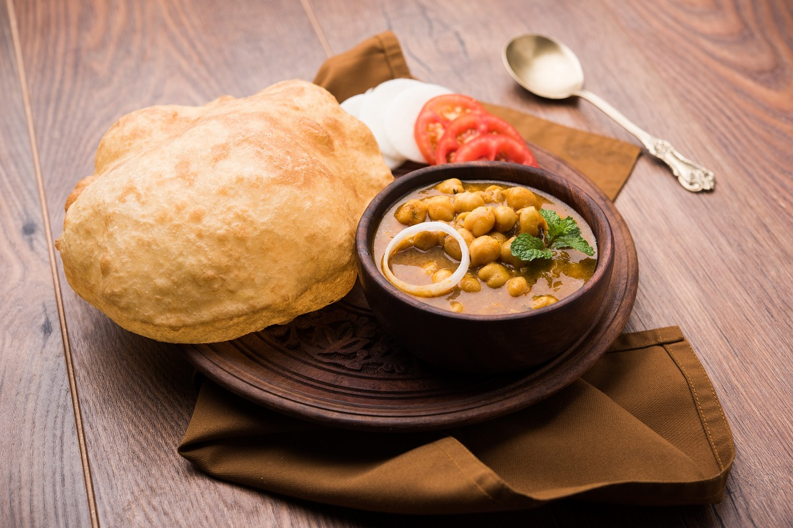

Chole Bhature

Chole Bhature also known as Chana Bhatura is one of the most popular Punjabi dish liked almost all over India. Chole stands for a spiced tangy chickpea curry and Bhatura is a soft and fluffy fried leavened bread. Chole Bhature always make for a delicious and filling meal. In this recipe post, I have included the step-by-step pictorial of making both the chana curry as well as a quick bhatura that is made without yeast.
Chana Bhatura is a spicy, tasty and a filling dish. I have eaten this dish at many places in Punjab and Delhi. Each restaurants or dhaba (eateries on highways) have their own flavors and taste in the chickpea curry.In some places the curry is very spicy, at other places it has tangy taste and the consistency of the curry also varies from slightly thick to semi-dry and dry.
Ingredients
For Bhature
- 2 cup maida
- 2 tbsp rava / semolina, fine
- 1 tsp sugar
- 1/4 tsp baking soda
- 1 tsp sugar
- 1/2 tsp salt
- 2 tbsp oil
- 1/4 cup curd
- Water as required
- Oil for deep frying
For Chole
- 1 cup chana / chickpea, soaked overnight
- 2 tea bags
- 1/4 tsp baking soda
- 1 tsp salt
- 3 cup water
- 2 tbsp oil
- 1 bay leaf
- 1 black cardamom
- 2 pod cardamom
- 1 inch cinnamon
- 1 tsp cumin / jeera
- 1/2 tsp kasuri methi
- 1 onion, finely chopped
- 1 tsp ginger garlic paste
- 1/4 tsp turmeric
- 1 tsp chilli powder
- 1 tsp coriander powder
- 1/2
tsp cumin powder
- 1/2 tsp garam masala
- 1 tsp aamchur
- 1/4 tsp salt
- 1½ cup tomato puree
- 2 tbsp coriander, finely chopped
For Tempering
- 1 tbsp ghee
- 1/4 tsp chilli powder
- 1/4 tsp turmeric
- 2 green chilli, slit
- 1/4 tsp garam masala
Instructions
For Bhature:
- Firstly, in a large bowl take 2 cup maida, 2 tbsp rava, 1 tsp sugar, ¼ tsp baking soda, 1 tsp sugar, ½ tsp salt and 2 tbsp oil. mix well.
- Now add ¼ cup curd and mix well making sure everything is well combined.
- Further, add water as required and knead the dough.
- Knead to the smooth and soft dough without putting much pressure.
- Grease the dough with oil, cover and rest for 2 hours
- After 2 hours, knead the dough slightly.
- Pinch a ball sized dough and make a ball without andy cracks.
- Roll slightly thick, applying oil to prevent from sticking.
- Drop the rolled dough into the hot oil.
- Press until the bhature puffs up and splash oil to puff up fully.
- Flip over and fry until it turns golden brown.
- Finally, drain off the bhatura and is ready to enjoy with chole masala.
For Chole:
- Firstly, in a pressure cooker take soaked chana. i have soaked 1 cup chana in enough water for 8 hours.
- Add 2 tea bags, ¼ tsp baking soda, 1 tsp salt and 3 cup water.
- Cover and pressure cook for 5 whistles. if you do not have tea bags, then you can prepare tea decoction and add to cooker.
- Once the pressure releases, open the cooker and discard the tea bags. keep aside.
- In a large kadai, heat 2 tbsp oil, 1 bay leaf, 1 black cardamom, 2 pod cardamom, 1 inch cinnamon, 1 tsp cumin, ½ tsp kasuri methi. saute on low flame until the spices turn aroamtic.
- Now add 1 onion, 1 tsp ginger garlic paste and saute until onions turn golden brown.
- Add ¼ tsp turmeric, 1 tsp chilli powder, 1 tsp coriander powder, ½ tsp cumin powder, ½ tsp garam masala, 1 tsp aamchur and ¼ tsp salt.
- Saute on low flame until the spices turn aromatic.
- Further add 1½ cup tomato puree and saute until the oil separates. to prepare tomato puree, i have blended 2½ ripened tomatoes in blender without adding water.
- Now add boiled chole and mix well. adjust consistency by adding water if required.
- Cover and simmer for 10 minutes, or until chole absorbs all the flavour.
- To prepare the tempering, heat 1 tbsp ghee in a pan.
- Add 2 chilli, ¼ tsp turmeri, ¼ tsp chilli powder and ¼ tsp garam masala.
- Saute on low flame without burning the spices.
- Pour the tempering over the chole masala, add 2 tbsp coriander and mix well.
- Finally, chole bhature is ready to enjoy with some onions.
Enjoy!
Back to Home